2 minutes
DeathStar Writeup
此文章以 kali 地址为 10.10.10.5 为示例
Nmap 扫描
端口和服务识别
sudo nmap --min-rate 10000 -p- 10.10.10.20
未发现任何开放的端口
数据包分片扫描
sudo nmap -f --min-rate 10000 -p- 10.10.10.20
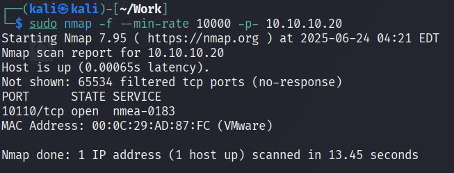
还是未发现任何开放的端口
源端口伪装扫描
sudo nmap --source-port 53 --min-rate 10000 -p- 10.10.10.20
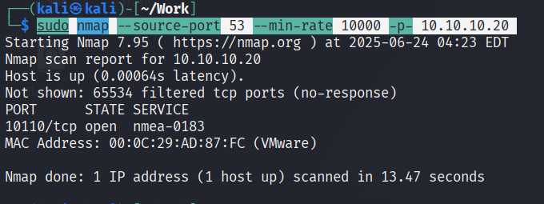
还是未发现任何开放端口
随机端口顺序扫描
sudo nmap -r --min-rate 10000 -p- 10.10.10.20
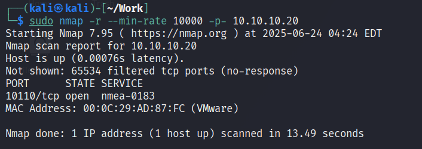
还是未发现任何开放端口
TCP Windows 扫描
sudo nmap --scanflags URGPSHFIN --min-rate 10000 -p- 10.10.10.20
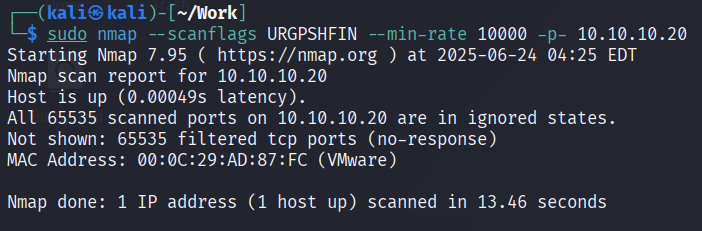
还是未发现任何开放的端口
慢速扫描
sudo nmap -T2 -p- 10.10.10.20
太慢了，无结果，暂时先跳过
流量分析
tshark -i eth0 -f "host 10.10.10.20"
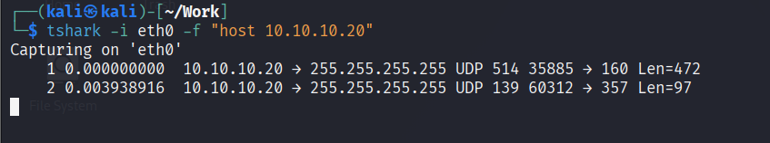
捕捉流量
tshark -i eth0 -f "host 10.10.10.20" -w flu.pcap
tshark -r flu.pcap
tshark -r flu.pcap -V
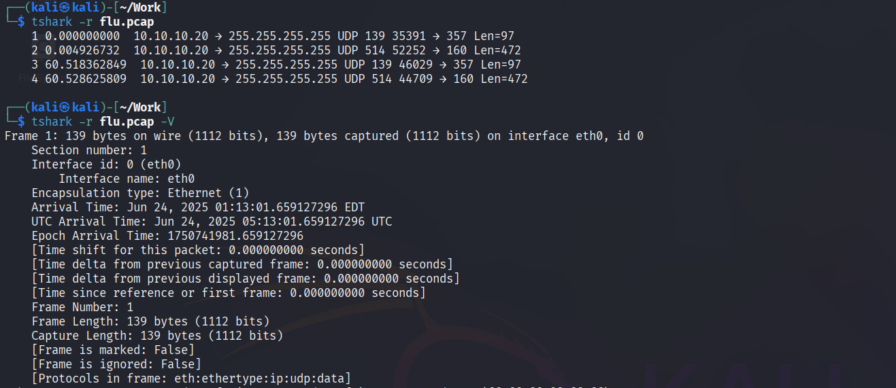
转换为 ASCII 字符串
tshark -r flu.pcap -T fields -e data | tr -d '' | xxd -r -p
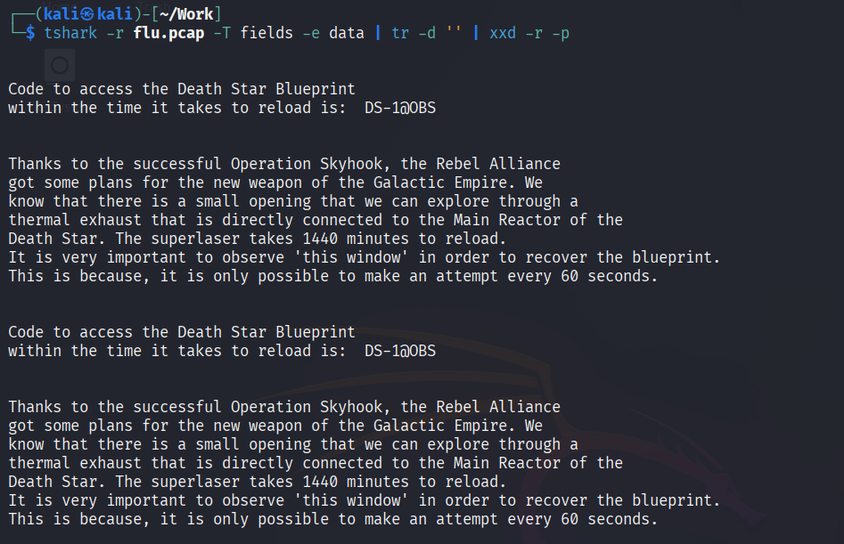
扫描 1440 端口
sudo nmap -sT -sU -p1440 10.10.10.20
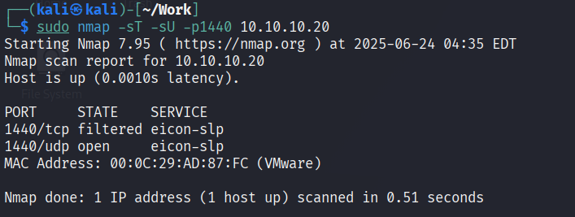
尝试连接 1440
nc -u 10.10.10.20 1440
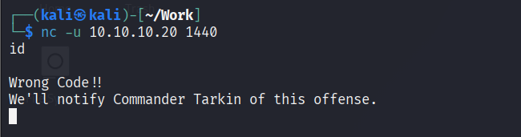
此路不通通过管道符将发射密码给他试试
echo "DS-1@OBS" | nc -u 10.10.10.20 1440
有一长串类似 base64 的回显，保存下来
echo "DS-1@OBS" | nc -u 10.10.10.20 1440 | tee mass
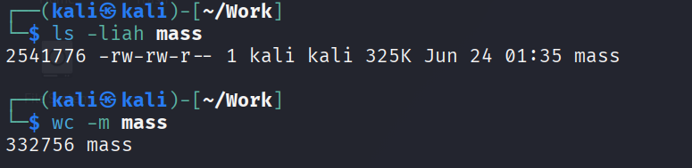
解除 base64
cat mass | base64 -d > x
file x
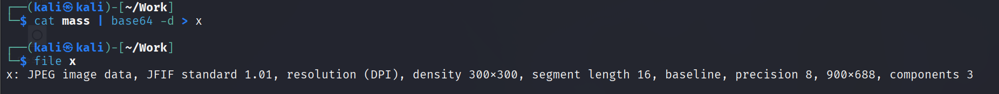
发现是 jgp
mv x x.jpg
open x.jpg
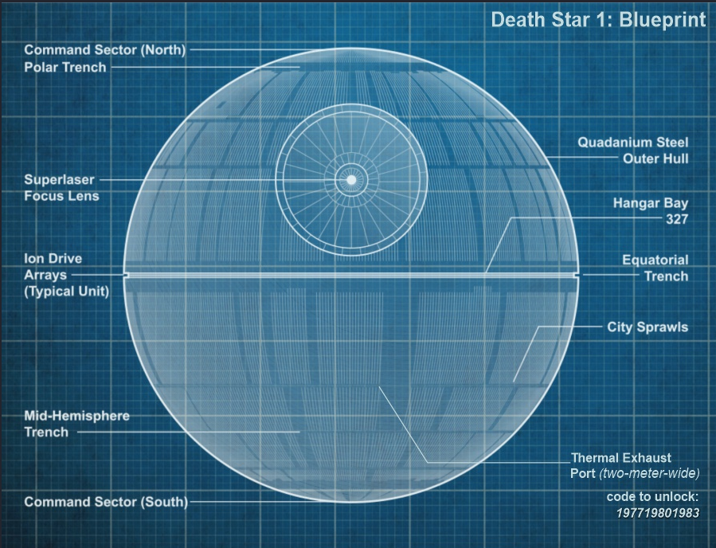
留意右下角的 code to unlock，可能是密码
图片分析
查看隐写情况
steghide extract -sf x.jpg
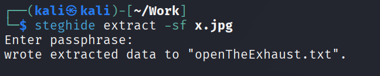
查看提取的内容
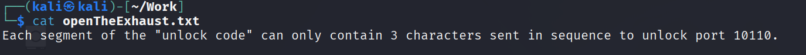
端口敲门
knock -v 10.10.10.20 197 719 801 983
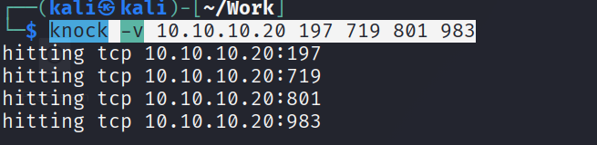
sudo nmap -sT -p10110 10.10.10.20
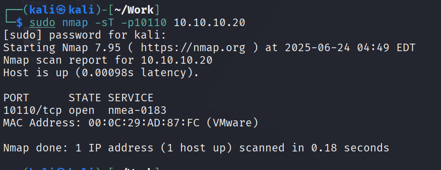
sudo nmap -sT -sC -sV -p10110 10.10.10.20
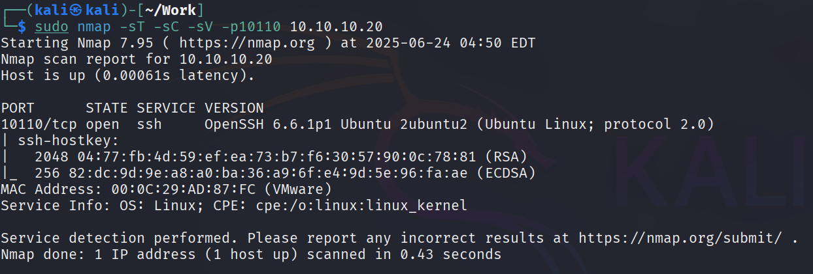
发现 10110 是 ssh 服务
ssh 服务渗透
尝试连接
sudo ssh root@10.10.10.20 -p 10110
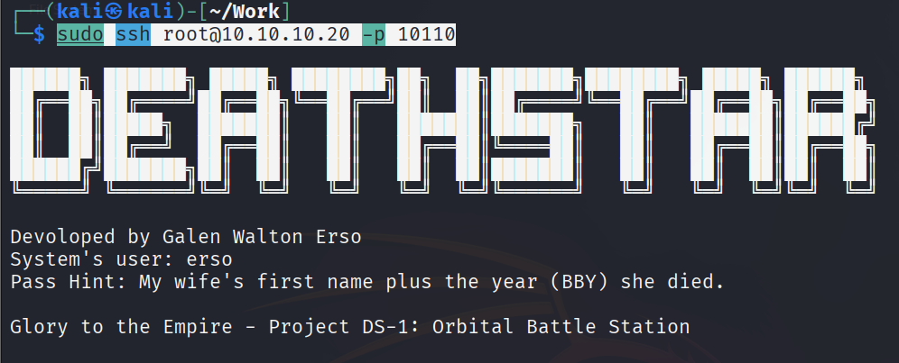
发现一个用户名为 erso，密码为 lyra13
sudo ssh erso@10.10.10.20 -p 10110
进入系统
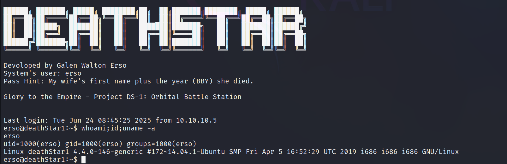
Linux 提权
查看 suid 位可执行文件
find / -perm /u=s,g=s -type f 2>/dev/null

发现可疑文件 /bin/dartVader
主函数与反汇编
将文件拿到 kali 当中
scp -P 10110 -q erso@10.10.10.20:/bin/dartVader .